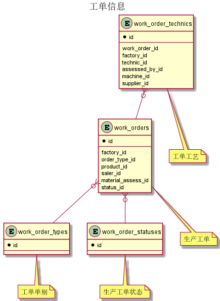
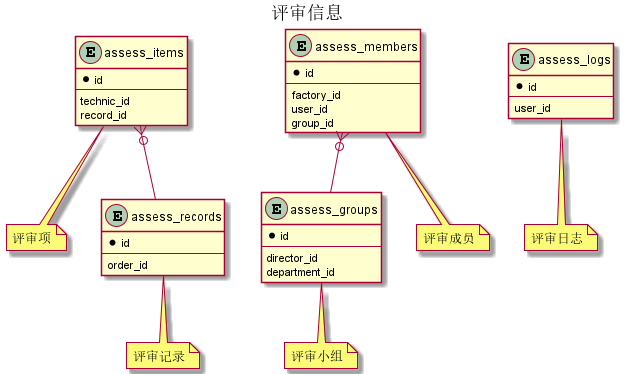

目 录
1. 数据库对象
2. 模块列表
2. 数据库对象列表
2.1 表格列表
base中基础信息下共计5个表，分别如下:
mes中订单评审下共计28个表，分别如下:
2.2 模块关系图
1. 工单信息

2. 评审信息

3. 具体模块明细
3.1 基础信息
表格base.customers
| 1 | id | bigint | 否 | 非业务主键:datetime | |
| 2 | code | varchar(255) | 否 | 代码 | |
| 3 | name | varchar(255) | 否 | 名称 | |
| 4 | parent_id | bigint | 是 | 上级单位ID | base.customers |
| 5 | quick_code | varchar(255) | 是 | 快捷码 | |
| 6 | remark | varchar(255) | 是 | 备注 | |
| 7 | saler_id | bigint | 是 | 对应业务员ID | base.users |
| 8 | short_name | varchar(255) | 否 | 简称 | |
| 9 | updated_at | timestamp | 否 | 更新时间 | |
表格base.departments
| 1 | id | integer | 否 | 非业务主键:auto_increment | |
| 2 | code | varchar(10) | 否 | 代码 | |
| 3 | indexno | varchar(20) | 否 | 顺序号 | |
| 4 | name | varchar(80) | 否 | 名称 | |
| 5 | parent_id | integer | 是 | 上级部门ID | base.departments |
| 6 | updated_at | timestamp | 否 | 更新时间 | |
| 1 | uk_l7tivi5261wxdnvo6cct9gg6t | code |
| idx_lloboi12ir2a1q541ntsr7kao | parent_id | 否 |
表格base.factories
| 1 | id | integer | 否 | 非业务主键:auto_increment | |
| 2 | address | varchar(255) | 否 | 厂址 | |
| 3 | code | varchar(255) | 否 | 代码 | |
| 4 | name | varchar(255) | 否 | 名称 | |
| 5 | updated_at | timestamp | 否 | 更新时间 | |
表格base.suppliers
| 1 | id | integer | 否 | 非业务主键:auto_increment | |
| 2 | code | varchar(255) | 否 | 代码 | |
| 3 | name | varchar(255) | 否 | 名称 | |
| 4 | updated_at | timestamp | 否 | 更新时间 | |
表格base.users
| 1 | id | bigint | 否 | 非业务主键:datetime | |
| 2 | begin_on | date | 否 | 生效日期 | |
| 3 | code | varchar(255) | 否 | 代码 | |
| 4 | department_id | integer | 否 | 部门信息ID | base.departments |
| 5 | email | varchar(255) | 是 | 电子邮件 | |
| 6 | end_on | date | 是 | 失效日期 | |
| 7 | factory_id | integer | 是 | 厂区信息ID | base.factories |
| 8 | mobile | varchar(255) | 是 | 移动电话 | |
| 9 | name | varchar(255) | 否 | 名称 | |
| 10 | remark | varchar(255) | 是 | 备注 | |
| 11 | updated_at | timestamp | 否 | 更新时间 | |
3.2 订单评审
表格mes.assess_groups
| 1 | id | bigint | 否 | 非业务主键:datetime | |
| 2 | code | varchar(255) | 否 | 代码 | |
| 3 | department_id | integer | 否 | 部门信息ID | base.departments |
| 4 | director_id | bigint | 是 | 用户信息ID | base.users |
| 5 | name | varchar(255) | 否 | 名称 | |
| 6 | updated_at | timestamp | 否 | 更新时间 | |
表格mes.assess_items
| 1 | id | bigint | 否 | 非业务主键:datetime | |
| 2 | days | integer | 否 | 天数 | |
| 3 | indexno | varchar(255) | 否 | 序号 | |
| 4 | matchine | varchar(255) | 否 | 加工中心或者供应商 | |
| 5 | record_id | bigint | 否 | 评审记录ID | mes.assess_records |
| 6 | technic_id | integer | 否 | 工艺ID | mes.technics |
| idx_supioe5aa6tgiu208r5m0vvij | record_id | 否 |
表格mes.assess_logs
| 1 | id | bigint | 否 | 非业务主键:datetime | |
| 2 | from_status | integer | 否 | 起始状态 | |
| 3 | ip | varchar(255) | 否 | IP | |
| 4 | order_id | bigint | 否 | 工单ID | |
| 5 | remark | varchar(255) | 是 | 备注 | |
| 6 | to_status | integer | 否 | 结果状态 | |
| 7 | updated_at | timestamp | 否 | 更新时间 | |
| 8 | user_id | bigint | 否 | 用户信息ID | base.users |
表格mes.assess_members
| 1 | uk_d9084em65k4s1ie7i8fnfp125 | group_id,user_id,factory_id |
| idx_cw89ot1gfstybe4rf9sg83vl8 | group_id | 否 |
表格mes.assess_records
| 1 | id | bigint | 否 | 非业务主键:datetime | |
| 2 | assess_status | integer | 否 | 评审状态 | |
| 3 | material_ready | boolean | 否 | 是否有料 | |
| 4 | material_ready_on | date | 是 | 到料日期 | |
| 5 | order_id | bigint | 否 | 生产工单ID | mes.work_orders |
| 6 | scheduled_on | date | 否 | 评审交付日期 | |
| 7 | updated_at | timestamp | 否 | 更新时间 | |
| idx_9ibkmohvwmt2hvbabc79y79pf | order_id | 否 |
表格mes.machines
| 1 | id | integer | 否 | 非业务主键:auto_increment | |
| 2 | code | varchar(255) | 否 | 代码 | |
| 3 | name | varchar(255) | 否 | 名称 | |
| 4 | updated_at | timestamp | 否 | 更新时间 | |
表格mes.material_assesses
| mes.material_assesses | id | 到料评审 |
| 1 | id | bigint | 否 | 非业务主键:datetime | |
| 2 | assessed_by_id | bigint | 是 | 用户信息ID | base.users |
| 3 | created_at | timestamp | 否 | 创建时间 | |
| 4 | order_id | bigint | 否 | 生产工单ID | mes.work_orders |
| 5 | ready | boolean | 否 | 是否有料 | |
| 6 | ready_on | date | 是 | 到料日期 | |
| 7 | updated_at | timestamp | 否 | 更新时间 | |
| 1 | uk_dlh25ihrfsda56lme5qhifkhi | order_id |
表格mes.material_item_assesses
| mes.material_item_assesses | id | 到料评审明细 |
| idx_gb6gcy4pbcgivs6csbrigrbmw | material_assess_id | 否 |
表格mes.material_items
| 1 | id | bigint | 否 | 非业务主键:datetime | |
| 2 | amount | integer | 否 | 数量 | |
| 3 | indexno | varchar(255) | 否 | 顺序号 | |
| 4 | material_id | bigint | 否 | 品号信息ID | mes.materials |
| 5 | product_id | bigint | 否 | 产品信息ID | mes.products |
| idx_pwsw1fkrx2pan1b703ebmnyv | material_id | 否 |
表格mes.material_types
| 1 | id | integer | 否 | 非业务主键:auto_increment | |
| 2 | code | varchar(255) | 否 | 代码 | |
| 3 | name | varchar(255) | 否 | 名称 | |
表格mes.materials
| 1 | id | bigint | 否 | 非业务主键:datetime | |
| 2 | code | varchar(255) | 否 | 代码 | |
| 3 | material_type_id | integer | 否 | 品号类别ID | mes.material_types |
| 4 | name | varchar(255) | 否 | 名称 | |
| 5 | remark | varchar(255) | 是 | 备注 | |
| 6 | specification | varchar(255) | 是 | 规格 | |
| 7 | unit_id | integer | 否 | 计量单位ID | mes.measurement_units |
| 8 | updated_at | timestamp | 否 | 更新时间 | |
表格mes.measurement_units
| mes.measurement_units | id | 计量单位 |
| 1 | id | integer | 否 | 非业务主键:auto_increment | |
| 2 | code | varchar(255) | 否 | 代码 | |
| 3 | name | varchar(255) | 否 | 名称 | |
表格mes.order_settings
| mes.order_settings | id | 工单评审时效设置 |
| 1 | id | integer | 否 | 非业务主键:auto_increment | |
| 2 | begin_at | timestamp | 否 | 生效时间 | |
| 3 | end_at | timestamp | 是 | 失效时间 | |
| 4 | work_order_id | bigint | 否 | 生产工单ID | mes.work_orders |
表格mes.product_material_items
| mes.product_material_items | id | 产品材料明细(bom) |
| 1 | id | bigint | 否 | 非业务主键:datetime | |
| 2 | amount | float4 | 否 | 数量 | |
| 3 | cb002 | varchar(255) | 否 | 原表cb002 | |
| 4 | cb003 | varchar(255) | 否 | 原表cb003 | |
| 5 | indexno | varchar(255) | 否 | 顺序号 | |
| 6 | material_id | bigint | 否 | 品号信息ID | mes.materials |
| 7 | product_id | bigint | 否 | 产品信息ID | mes.products |
| 8 | updated_at | timestamp | 否 | 更新时间 | |
| idx_kyl7aqbs2wq9ube5rqttxpswb | product_id | 否 |
表格mes.product_technics
| mes.product_technics | id | 产品工艺 |
| idx_gdqqm944bbkos66qkn6rv7x2n | scheme_id | 否 |
表格mes.products
| 1 | id | bigint | 否 | 非业务主键:datetime | |
| 2 | code | varchar(255) | 否 | 代码 | |
| 3 | material_type_id | integer | 否 | 品号类别ID | mes.material_types |
| 4 | name | varchar(255) | 否 | 名称 | |
| 5 | remark | varchar(255) | 是 | 备注 | |
| 6 | specification | varchar(255) | 是 | 规格 | |
| 7 | unit_id | integer | 否 | 计量单位ID | mes.measurement_units |
| 8 | updated_at | timestamp | 否 | 更新时间 | |
表格mes.review_events
| 1 | id | bigint | 否 | 非业务主键:datetime | |
| 2 | comments | varchar(300) | 否 | 反馈回复内容 | |
| 3 | issue_by_id | bigint | 否 | 用户信息ID | base.users |
| 4 | remark | varchar(500) | 是 | 备注 | |
| 5 | updated_at | timestamp | 否 | 更新时间 | |
| 6 | work_order_id | bigint | 否 | 生产工单ID | mes.work_orders |
| idx_7gshhmknv5ae5mrxgkbeslybi | work_order_id | 否 |
表格mes.review_events_watchers
| mes.review_events_watchers | review_event_id,user_id | 反馈人员列表 |
| idx_swsfhhcir1ww43igu61bgi8r8 | review_event_id | 否 |
表格mes.reviewers
| 1 | id | bigint | 否 | 非业务主键:datetime | |
| 2 | begin_on | date | 否 | 生效日期 | |
| 3 | end_on | date | 是 | 失效日期 | |
| 4 | user_id | bigint | 否 | 用户信息ID | base.users |
表格mes.reviewers_factories
| mes.reviewers_factories | reviewer_id,factory_id | 复审员对应的工厂 |
| idx_o019dq0nctfoh1p94cul1ax4u | reviewer_id | 否 |
表格mes.reviewers_rounds
| mes.reviewers_rounds | reviewer_id,value_ | 复审员对应的复审轮次 |
| idx_jav04leq2d7o94m9wdtfa0uk9 | reviewer_id | 否 |
表格mes.sales_order_types
| mes.sales_order_types | id | 销售订单类型 |
| 1 | id | integer | 否 | 非业务主键:auto_increment | |
| 2 | code | varchar(255) | 否 | 代码 | |
| 3 | name | varchar(255) | 否 | 名称 | |
| 4 | remark | varchar(255) | 是 | 备注 | |
| 5 | updated_at | timestamp | 否 | 更新时间 | |
表格mes.technic_schemes
| mes.technic_schemes | id | 工艺路线 |
| 1 | id | bigint | 否 | 非业务主键:datetime | |
| 2 | indexno | varchar(255) | 否 | 顺序号 | |
| 3 | name | varchar(255) | 否 | 名称 | |
| 4 | product_id | bigint | 否 | 产品信息ID | mes.products |
| 5 | updated_at | timestamp | 否 | 更新时间 | |
| idx_40wi71ckbvuwewj5gsg07i0jt | product_id | 否 |
表格mes.technics
| 1 | id | integer | 否 | 非业务主键:auto_increment | |
| 2 | assess_group_id | bigint | 是 | 评审小组ID | mes.assess_groups |
| 3 | code | varchar(255) | 否 | 代码 | |
| 4 | description | varchar(255) | 是 | 描述 | |
| 5 | duration | integer | 否 | 评审预计需要的天数，默认为0 | |
| 6 | internal | boolean | 否 | 是否是厂内工艺 | |
| 7 | machine_id | integer | 是 | 加工中心ID | mes.machines |
| 8 | name | varchar(255) | 否 | 名称 | |
| 9 | remark | varchar(255) | 是 | 备注 | |
| 10 | supplier_id | integer | 是 | 供应商信息ID | base.suppliers |
| 11 | updated_at | timestamp | 否 | 更新时间 | |
表格mes.work_order_statuses
| mes.work_order_statuses | id | 生产工单状态 |
| 1 | id | integer | 否 | 非业务主键:auto_increment | |
| 2 | code | varchar(10) | 否 | 代码 | |
| 3 | name | varchar(255) | 否 | 名称 | |
表格mes.work_order_technics
| mes.work_order_technics | id | 工单工艺 |
| 1 | id | bigint | 否 | 非业务主键:datetime | |
| 2 | assessed_by_id | bigint | 是 | 用户信息ID | base.users |
| 3 | days | integer | 是 | 天数 | |
| 4 | description | varchar(255) | 是 | 描述 | |
| 5 | factory_id | integer | 否 | 厂区信息ID | base.factories |
| 6 | indexno | varchar(255) | 否 | 顺序号 | |
| 7 | internal | boolean | 否 | 是否是厂内工艺 | |
| 8 | machine_id | integer | 是 | 加工中心ID | mes.machines |
| 9 | passed | boolean | 是 | 是否通过 | |
| 10 | supplier_id | integer | 是 | 供应商信息ID | base.suppliers |
| 11 | technic_id | integer | 否 | 工艺ID | mes.technics |
| 12 | updated_at | timestamp | 否 | 更新时间 | |
| 13 | work_order_id | bigint | 否 | 生产工单ID | mes.work_orders |
| idx_hv2u30n2y2n05tnq0ykrri6k7 | work_order_id | 否 |
表格mes.work_order_types
| mes.work_order_types | id | 工单单别 |
| 1 | id | integer | 否 | 非业务主键:auto_increment | |
| 2 | code | varchar(255) | 否 | 代码 | |
| 3 | name | varchar(255) | 否 | 名称 | |
| 4 | remark | varchar(255) | 是 | 备注 | |
| 5 | updated_at | timestamp | 否 | 更新时间 | |
表格mes.work_orders
| 1 | id | bigint | 否 | 非业务主键:datetime | |
| 2 | amount | integer | 否 | 数量 | |
| 3 | assess_begin_at | timestamp | 是 | 评审开始时间 | |
| 4 | assess_status | integer | 否 | 评审状态 | |
| 5 | batch_num | varchar(255) | 否 | 批号 | |
| 6 | created_at | timestamp | 否 | 创建日期 | |
| 7 | deadline | date | 是 | 客户交付日期 | |
| 8 | factory_id | integer | 否 | 厂区信息ID | base.factories |
| 9 | material_assess_id | bigint | 是 | 到料评审ID | mes.material_assesses |
| 10 | order_type_id | integer | 否 | 工单单别ID | mes.work_order_types |
| 11 | planned_end_on | date | 是 | 计划完工日期 | |
| 12 | product_id | bigint | 否 | 产品信息ID | mes.products |
| 13 | remark | varchar(255) | 是 | 备注 | |
| 14 | review_assess_begin_at | timestamp | 是 | 复审开始时间 | |
| 15 | saler_id | bigint | 是 | 用户信息ID | base.users |
| 16 | scheduled_on | date | 是 | 评审交付日期 | |
| 17 | status_id | integer | 否 | 生产工单状态ID | mes.work_order_statuses |
| 18 | updated_at | timestamp | 否 | 更新时间 | |